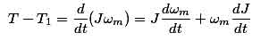
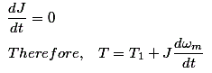

Motor Load System
We can describe the dynamics of electrical drive easily by the following instant.
Here, J = Polar moment of inertia of motor load
Wm = Instantaneous angular velocity
T = Instantaneous value of developed motor torque
T1 = Instantaneous value of load torque referred to motor shaft
Now, from the fundamental torque equation -

For drives with constant inertia,

So, the above equation states that the motor torque is balanced by load torque and a dynamic torque J(dωm/dt). This torque component is termed as dynamic torque as it is only present during the transient operations. From this equation, we can determine whether the drive is accelerating or decelerating. Such as during accelerating motor supplies load torque and additional torque component essentially. So, the torque, balancing the Dynamics of electrical braking is very helpful.
 by
by